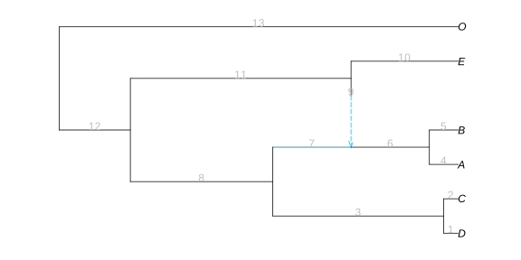

Continuous trait simulation
We show here how PhyloPlots can be used to simulate data under a Brownian motion (BM) process. We use the same network as in the previous section. The data used in the previous section was actually obtained using this simulation (followed by some rounding).
Brownian motion
We simulate three traits on the network: two independent traits that serve as predictors, and one "dependent" trait that is affected by the first 2. We start by choosing the parameters of the BM (ancestral mean and variance), by creating objects of class ParamsBM<:ParamsProcess.
params_trait1 = ParamsBM( 2, 0.5) # BM with mean 2 and variance 0.5
params_trait2 = ParamsBM(-2, 1) # BM with mean -2 and variance 1.0We then simulate the traits to serve as predictors according to these parameters, using function rand. For reproducibility, we use a stable random number generator (RNG), but the default random generator is better (and more efficient). To use the default RNG, simply remove rng in the code below.
using StableRNGs; rng = StableRNG(18480224); # stable RNG for reproducibility
sim1 = rand(rng, truenet, params_trait1) # simulate a BM on truenet
sim2 = rand(rng, truenet, params_trait2)This creates objects of class TraitSimulation, from which we can extract the data at the tips, thanks to the method getindex(::TraitSimulation, ::Symbol).
julia> trait1 = sim1[:tips] # trait 1 at the tips (data)6-element Vector{Float64}: 2.668361022724296 3.6959860408943888 4.54050665744728 4.846082872531411 2.2675521766599505 -0.33145290146825923julia> trait2 = sim2[:tips]6-element Vector{Float64}: -3.0082260758711197 -4.146087430962012 -2.3380570183619724 0.6548004043004525 -3.339449883560931 -4.566488146403815
This extractor creates an Array with one column, and as many lines as the number of tips there are in the phylogeny. It is sorted in the same order as the tips of the phylogeny used to simulate it. If needed, we could also extract the simulated values at the internal nodes in the network:
sim1[:internalnodes]7-element Vector{Float64}:
3.3116834769644856
4.438346935101672
3.922184789985015
3.34200857698516
2.563756870695104
1.3151130340020023
2.0These values (rounded to 3 digits) are those used in section Ancestral state reconstruction, when we compared the ancestral state reconstruction (or "predictions") of trait 1 (stored in ancTrait1) to the true simulated value.
Finally, we generate the last trait correlated with trait 1 (but not trait 2), with phylogenetic noise.
noise = rand(StableRNG(18700904), truenet, ParamsBM(0, 0.1)) # phylogenetic residuals
trait3 = 10 .+ 2 * trait1 .+ noise[:tips] # trait to study. independent of trait2For a simulation study, we would assume that we measured the three traits above, and then we would like to apply analysis methods to these data, e.g. to see how they infer the impact of traits 1 and 2 on trait 3. To do that, we may need to create a data frame containing all 3 traits, as shown below:
julia> using DataFramesjulia> dat = DataFrame(trait1 = trait1, trait2 = trait2, trait3 = trait3, tipnames = tiplabels(sim1))6×4 DataFrame Row │ trait1 trait2 trait3 tipnames │ Float64 Float64 Float64 String ─────┼──────────────────────────────────────── 1 │ 2.66836 -3.00823 15.4238 D 2 │ 3.69599 -4.14609 17.3332 C 3 │ 4.54051 -2.33806 18.1147 A 4 │ 4.84608 0.6548 18.8098 B 5 │ 2.26755 -3.33945 13.337 E 6 │ -0.331453 -4.56649 10.0124 O
These data were rounded to 3 digits and used in the previous section on Phylogenetic regression.
shifted Brownian motion
In a shifted BM, the trait evolves as a BM on the network most of the time, but undergo sudden shifts on some of the branches. The positions and values of the shifts can be stored in a ShiftNet object. The position of the shifts can be given using vector of edges. To see this, let's first plot the network with its associated edges and node numbers.
plot(truenet, useedgelength=true, showedgenumber=true);
For identifiability reasons, shifts are only allowed on tree (not hybrid) edges. Here, a shift on either hybrid edge 9 or 7 would have the same effect as a shift on edge 6: by shifting traits of species A and B.
Let's say that we want to add a shift with value 5.0 on the branch directly following the hybridization event, in order to model transgressive evolution. We can see on the plot above that this branch is number 6, so we define the following object:
julia> edge_afterhyb = truenet.edge[6] # the 6th edge has number 6PhyloNetworks.EdgeT{PhyloNetworks.Node}: number:6 length:2.2 attached to 2 node(s) (parent first): 5 -7julia> shift = ShiftNet(truenet.edge[6], 5.0, truenet)ShiftNet: ────────────────────────── Edge Number Shift Value ────────────────────────── 6.0 5.0 ──────────────────────────
Note that the edge numbers and values of a ShiftNet object can be retrieved thanks to functions getshiftedgenumber and getshiftvalue. The constructor can take a single edge and associated value, like here, or two vectors of edges and matching values.
Because we often need to put shifts only on edges right after hybrids, there is a special function shiftathybrids to do that, so that we do not have to find out their edges number. Here, the shift object could hence have been defined as:
shift = shiftathybrids(5.0, truenet)ShiftNet:
──────────────────────────
Edge Number Shift Value
──────────────────────────
6.0 5.0
──────────────────────────
The parameters for the simulation are then defined as above, just adding our ShiftNet object as a parameter. Again, we use a custom stable random number generator to make our example reproducible, but we recommend against this random number generator forf simulation studies (just remove the argument rng).
params_sh = ParamsBM(2, 0.5, shift) # BM with mean 2, variance 0.5, and shifts.The traits are simulated using the same function rand, and extracted at the tips as before.
rng = StableRNG(18700904)
sim_sh = rand(rng, truenet, params_sh) # simulate a shifted BM on truenet
trait_sh = sim_sh[:tips] # trait at the tips (data)6-element Vector{Float64}:
2.1947024460829594
1.8685916258969295
4.839327306337874
5.027005765795342
-0.6790231457083361
3.509974852157824tiplabels(sim_sh)6-element Vector{String}:
"D"
"C"
"A"
"B"
"E"
"O"